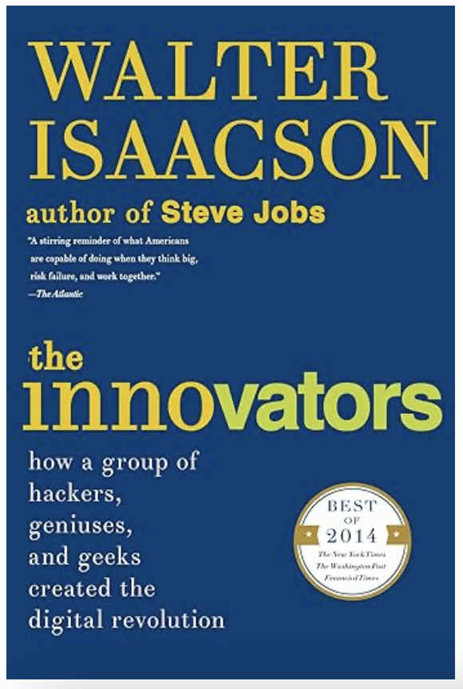
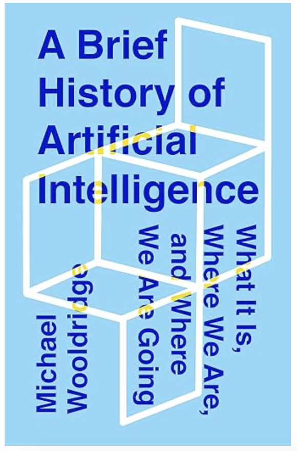
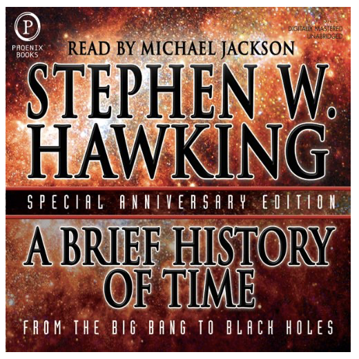
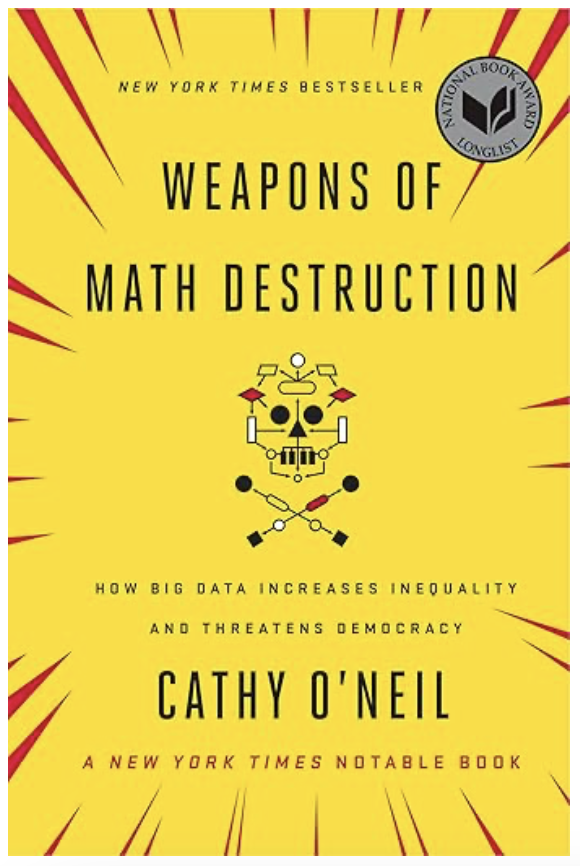
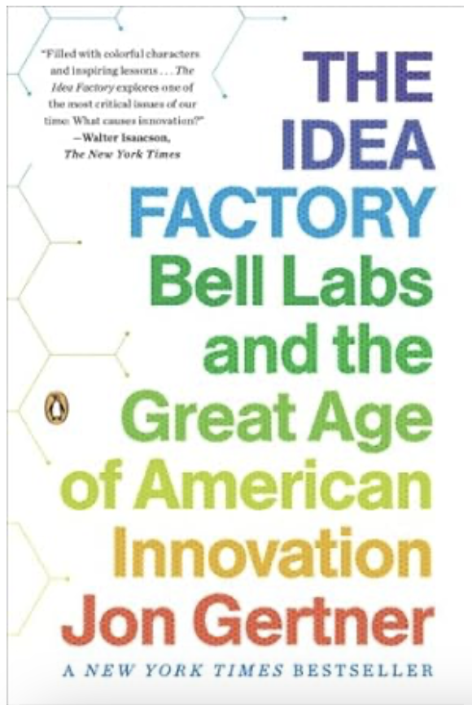
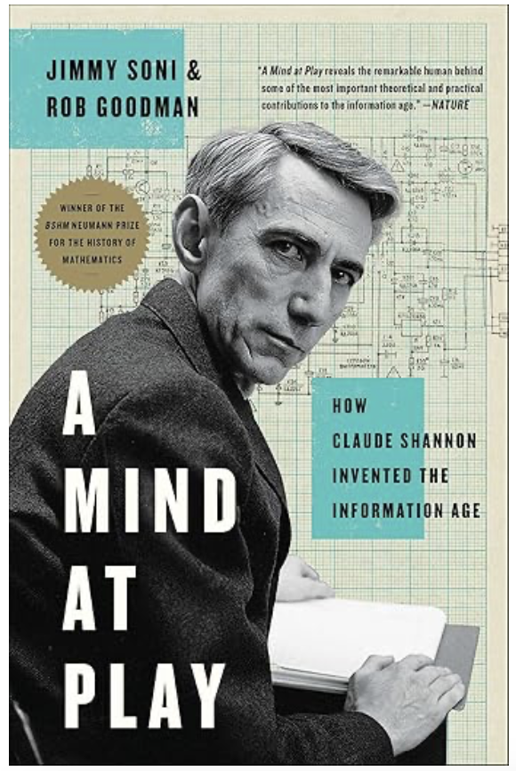
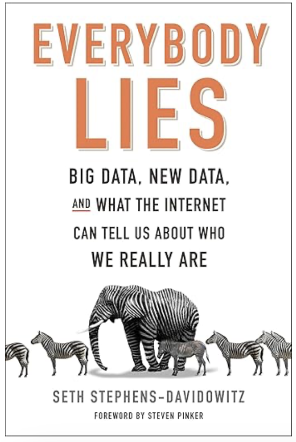
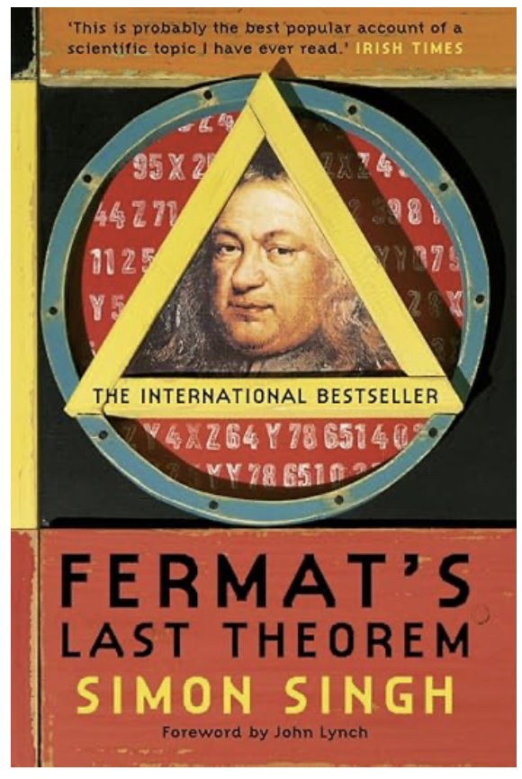

Recomendaciones de libros STEM que me gustaron (sin ningún orden en particular)
“The Innovators” - Walter Isaacson

Este libro explora las vidas y contribuciones de los pioneros detrás de las grandes innovaciones tecnológicas del último siglo. Desde Ada Lovelace hasta los creadores de la web, Isaacson traza una línea clara entre la colaboración humana y los avances tecnológicos. Es una lectura imprescindible para quienes buscan entender cómo la interacción entre ciencia y creatividad ha dado forma a la era digital actual. Recomendado para quienes deseen una inmersión en la historia de la tecnología.“A Brief History of Artificial Intelligence” - Michael Wooldridge

Wooldridge ofrece una visión accesible y bien fundamentada sobre la evolución de la IA, desde sus inicios en la década de 1950 hasta los desarrollos más recientes. Es una excelente introducción para quienes buscan un enfoque académico pero accesible sobre la historia y las implicancias éticas de la inteligencia artificial. Recomendado para cualquier interesado en cómo la IA ha llegado a donde está hoy.“A Brief History of Time” - Stephen W. Hawking

Un clásico de la divulgación científica, este libro de Hawking plantea algunas de las preguntas más fundamentales sobre el universo: desde la naturaleza del tiempo hasta la posibilidad de universos paralelos. Aunque es conocido por su complejidad, Hawking logra presentar conceptos difíciles de una forma comprensible para el lector promedio. Altamente recomendado para quienes buscan expandir su comprensión del cosmos.“Weapons of Math Destruction” - Cathy O’Neil

En este libro, O’Neal analiza el lado oscuro de los algoritmos y cómo, lejos de ser neutrales, pueden exacerbar las desigualdades sociales y económicas. Su crítica apunta a sistemas que impactan negativamente en sectores como la educación, las finanzas y la justicia penal. Recomendado para quienes están interesados en la ética de los algoritmos y el impacto social de la tecnología.“Permanent Record” - Edward Snowden
Un relato fascinante desde la perspectiva de Snowden, el famoso denunciante que expuso el programa de vigilancia masiva del gobierno de EE.UU. El libro explora cuestiones clave sobre la privacidad, la seguridad digital y el poder gubernamental. Recomendado para quienes desean una visión crítica y personal de los temas contemporáneos de ciberseguridad y privacidad.“The Idea Factory” - Jon Gertner

Gertner detalla la historia del laboratorio Bell Labs, el lugar donde se inventaron algunas de las tecnologías más revolucionarias del siglo XX, como el transistor y la fibra óptica. El libro destaca cómo el entorno de colaboración fue clave para estos avances. Recomendado para quienes estén interesados en la historia de la innovación tecnológica.“A Mind at Play” - Jimmy Soni

Esta biografía de Claude Shannon, el padre de la teoría de la información, ofrece un relato fascinante sobre uno de los intelectuales más influyentes del siglo XX. Shannon no solo cambió la forma en que entendemos la información, sino que sentó las bases para la revolución digital. Recomendado para aquellos interesados en los orígenes de la teoría de la información y su impacto actual.“Everybody Lies” - Seth Stephens-Davidowitz

Stephens-Davidowitz utiliza los datos masivos (big data) para revelar cómo las búsquedas en Google y otras fuentes online pueden mostrar lo que realmente piensan y sienten las personas. Es una lectura provocadora que desafía nuestras nociones sobre la privacidad, los prejuicios y el comportamiento humano. Recomendado para quienes buscan una mirada innovadora al uso de datos en la sociedad actual.“Fermat’s Last Theorem” - Simon Singh

Un clásico de la divulgación matemática, este libro narra la resolución del problema que mantuvo en vilo a los matemáticos durante siglos. Singh convierte esta historia en un apasionante thriller académico que combina historia, matemáticas y un desafío intelectual. Recomendado para aficionados a las matemáticas y a quienes disfrutan de las historias de superación intelectual.